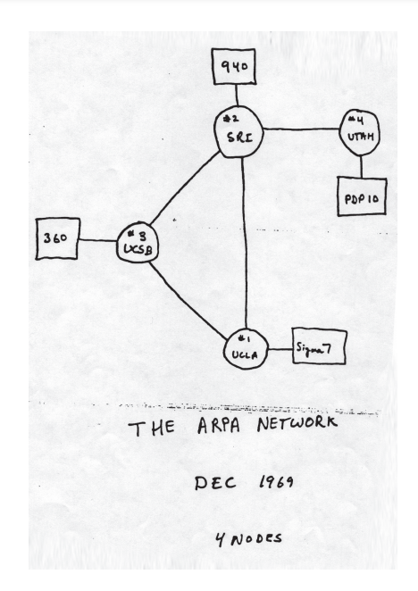
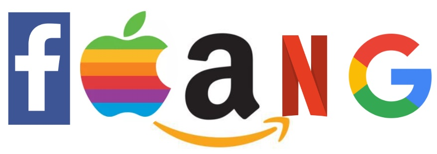

The Internet was first invented in the 1960s with the ARPANET, which would be a foundation of the Internet. The first message sent over the internet was 'LO', from UCLA to Stanford. It was meant to say LOGIN, but it crashed after 2 letters.
Web 1.0 was created during the 1990s, and had primarily static webpages and lots of personal webpages.
Web 2.0 was created during the 2000s, and marked the rise of corporations dominating the internet. FAANG, is a term that represents 5 companies: Facebook, Apple, Amazon, Netflix, Google that dominate the internet in various industries.
